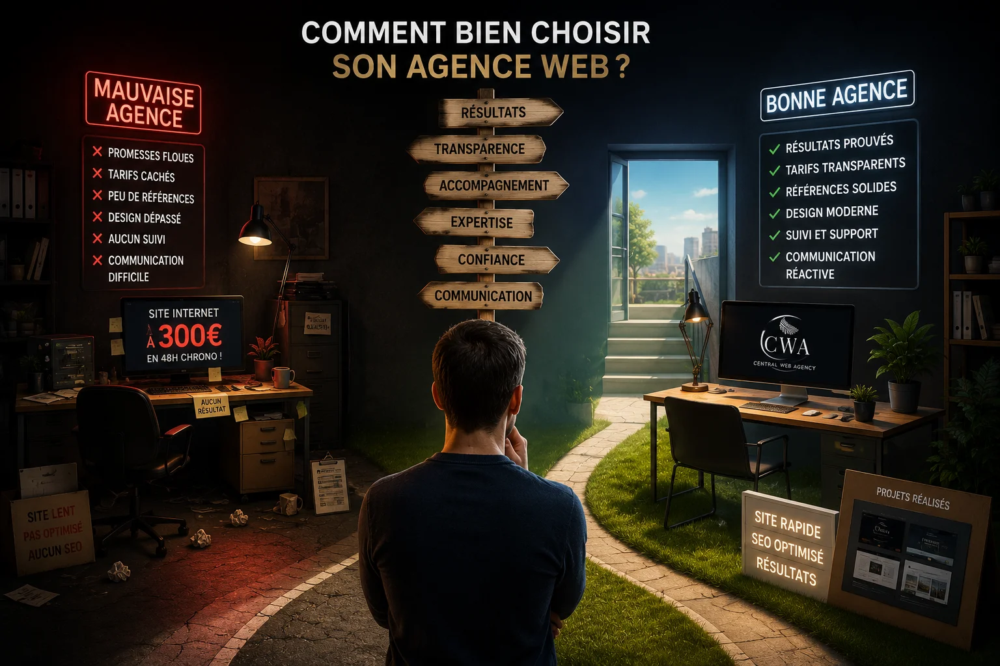

Par Central Web Agency · Mis à jour le

Pour choisir une agence web à Lyon, demandez une réalisation comparable, un devis détaillé et les conditions de suivi. Comparez les prestataires sur le même périmètre, même si leurs méthodes ou leurs tarifs diffèrent.
La grille à utiliser avant de signer
| Critère | Ce que vous pouvez vérifier |
|---|---|
| Réalisations | Ouvrez un site livré sur mobile. Essayez de retrouver les services, les horaires ou le bouton de contact. |
| Périmètre | Demandez quelles pages, quels contenus et quelles fonctionnalités sont inclus, et ce que vous devez fournir. |
| Coût total | Séparez la création, l’hébergement, la maintenance et les demandes hors périmètre. |
| Délais et validation | Identifiez les étapes, les éléments à valider et le point de départ du délai dans le devis. |
| Interlocuteur | Demandez qui conçoit, développe et répond à vos questions une fois le site livré. |
| Contrat | Vérifiez les conditions de livraison, de retouches et de résiliation avant de valider. |
Comparez deux devis sur un besoin identique
Exemple illustratif. Soumettez à deux agences le même projet de vitrine de cinq pages, avec une galerie et un formulaire. Un devis peut inclure l’aide à la rédaction ou la reprise de contenus et un autre demander des textes prêts à publier. Ces différences expliquent mieux le prix qu’une comparaison des montants seuls. Consultez notre guide du coût d’un site vitrine à Lyon pour préparer une demande comparable.
Posez la question de la propriété du site
C'est la question que la plupart des gens oublient de poser, et c'est pourtant l'une des plus importantes. Après livraison et paiement, êtes-vous propriétaire du code source de votre site ?
Certaines agences, notamment celles qui travaillent par abonnement, restent propriétaires du code et peuvent mettre votre site hors ligne si vous résiliez. Ce n'est pas forcément un problème si c'est clairement expliqué dès le départ et si le prix est cohérent. Mais vous devez le savoir avant de signer.
D'autres vous livrent le code complet et vous êtes totalement libre de changer d'hébergeur, de prestataire, ou de modifier vous-même votre site. C'est le cas des formules clé en main.
Vérifiez qui vous accompagne et comment
Demandez à qui vous transmettez vos contenus, qui valide la mise en ligne avec vous et qui traite les changements ultérieurs. Si plusieurs personnes participent, une répartition explicite des rôles aide à savoir à qui adresser chaque demande.
Vérifiez la connaissance de votre zone d’activité
À Lyon ou dans ses environs, une agence doit d’abord comprendre où vous recevez vos clients, où vous vous déplacez et quelles informations locales leur sont utiles. Une rencontre en présentiel peut compter dans votre choix. Posez la même question à chaque prestataire : comment le site expliquera-t-il ma zone d’intervention ?
Comment travaille Central Web Agency ?
Central Web Agency est basée à Heyrieux, dans l’Isère, près de Lyon. Vous échangez directement avec la personne qui crée votre site. Nos offres de création commencent à 450 € TTC pour une landing page, en paiement unique.
La maintenance est une prestation distincte et facultative, à partir de 39 €/mois pour une vitrine ou 99 €/mois pour un site dynamique après livraison. Elle n’inclut pas la création du site. Sa résiliation ne remet pas en cause les droits acquis sur le site. TVA non applicable, art. 293 B du CGI.